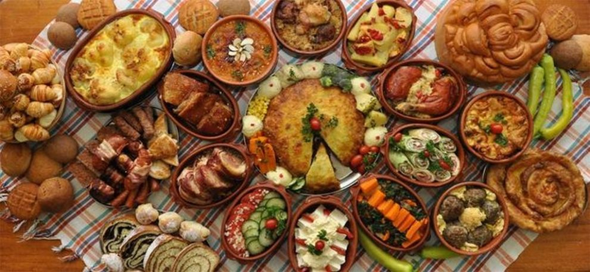
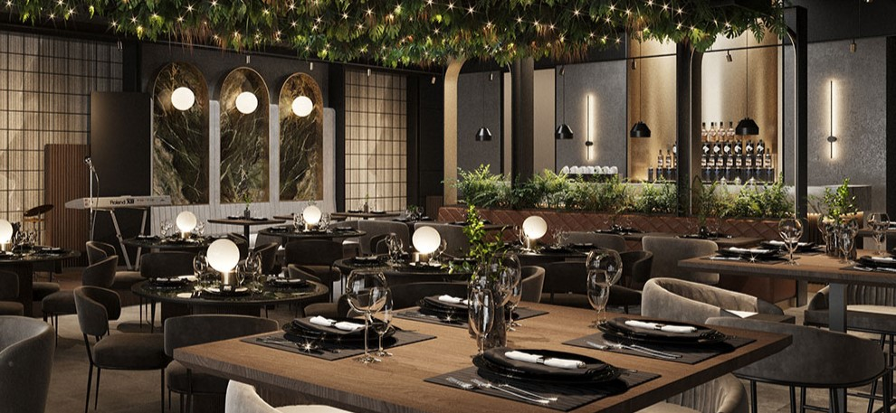
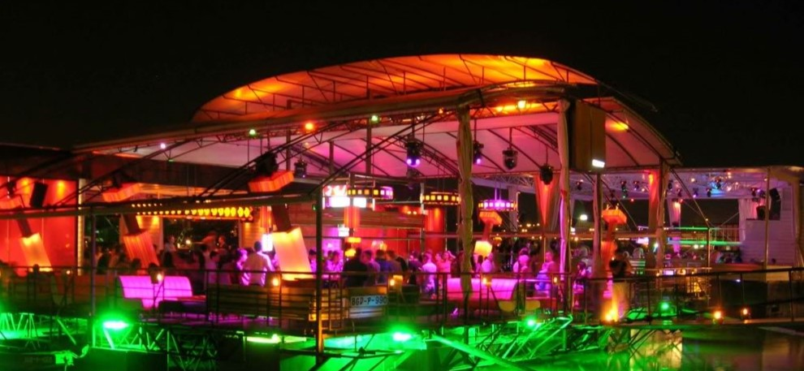

Od tradicionalnih specijaliteta do modernih restorana i kafića

Isprobajte specijalitete poput ćevapa, sarme i pečenja u boemskim kafanama Skadarlije.

Beograd nudi savremene restorane sa internacionalnom kuhinjom i kreativnim jelima.

Od modernih kafića do splavova na reci – noćni život Beograda je nadaleko poznat.